Latest recovered results, including the sparse-support trial: minimum eight points; two points per coefficient; degree ≤4; 450 Hz residual gate. All 4,797 points retained. Each figure covers eight channels and both receivers. Click an image to enlarge.
Track colors and IDs match within a method and receiver/channel. Gray points are unassociated. RMS is the in-sample polynomial-fit residual RMS. Short tracks remain provisional; low RMS alone does not establish residual whiteness or physical identity.
Wrapped EM · Graph paths · Wrapped Hough · Kalman beam / MHT · RANSAC reference · All per-track RMS values (CSV)
| Method | Associated | Tracks | Mean points/track | Mean duration (s) | GLRT | Unassociated | RMS |
|---|---|---|---|---|---|---|---|
| Wrapped EM | 93.54% | 160 | 28.04 | 25.02 | GLRT | Unassociated | RMS |
| Graph paths | 93.54% | 170 | 26.39 | 23.84 | GLRT | Unassociated | RMS |
| Wrapped Hough | 93.79% | 163 | 27.60 | 23.98 | GLRT | Unassociated | RMS |
| Kalman beam / MHT | 94.08% | 160 | 28.21 | 24.22 | GLRT | Unassociated | RMS |
| RANSAC reference | 93.73% | 162 | 27.75 | 23.78 | GLRT | Unassociated | RMS |
Association percentage uses all 4,797 observations. Mean duration is the unweighted mean of last minus first observation time per track. Download summary CSV
160 tracks · 4,487 associated · 310 unassociated · 93.54% associated · mean 28.04 points / 25.02 s per track · Per-track RMS CSV
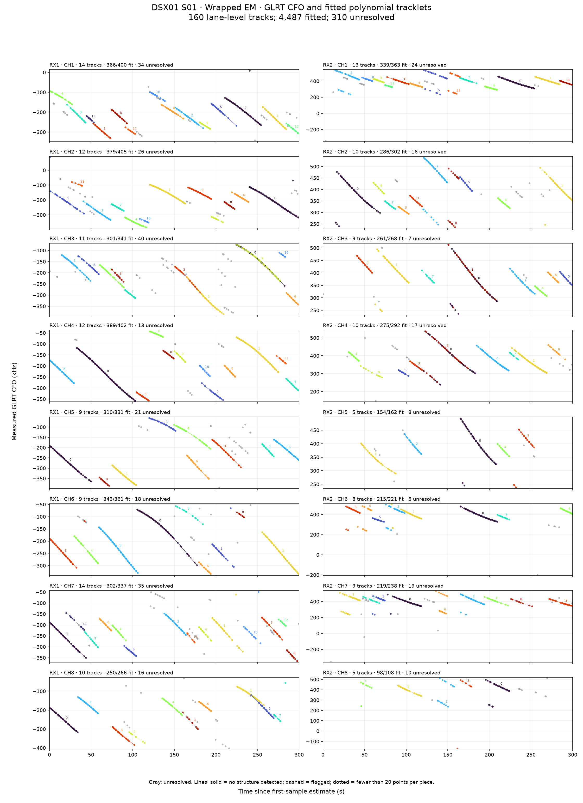
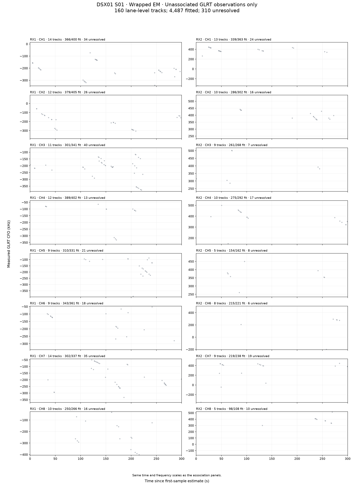
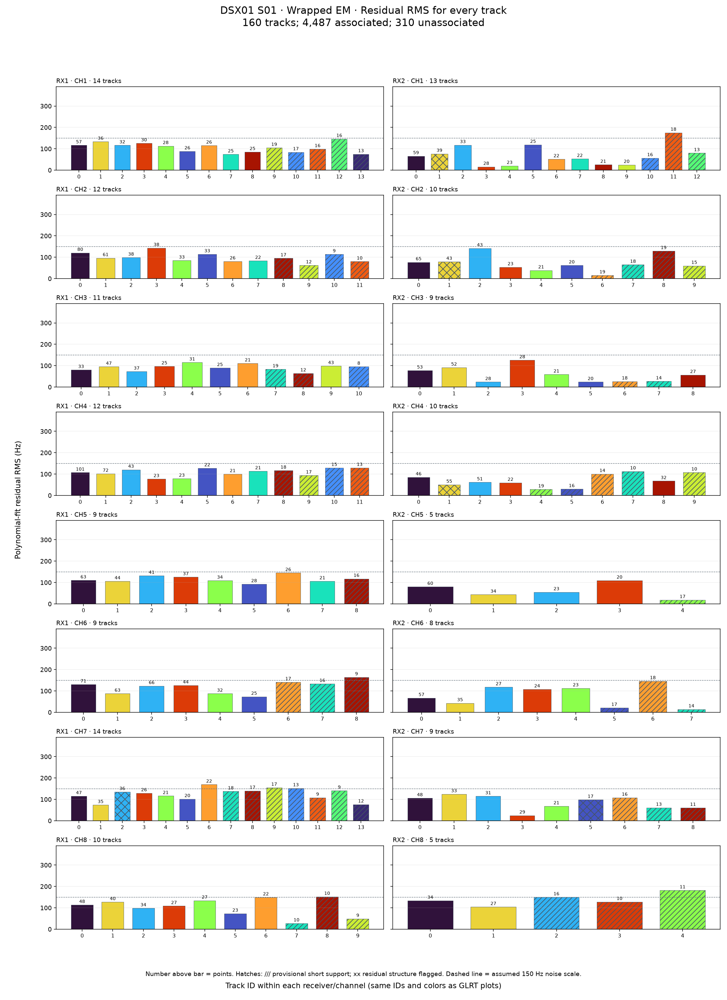
170 tracks · 4,487 associated · 310 unassociated · 93.54% associated · mean 26.39 points / 23.84 s per track · Per-track RMS CSV
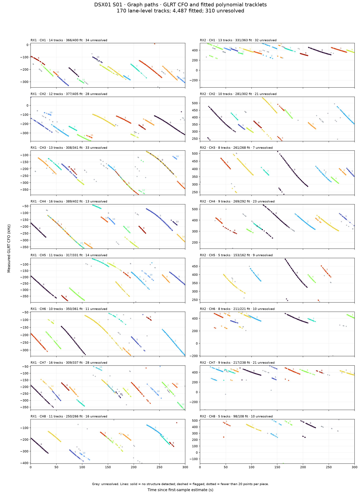
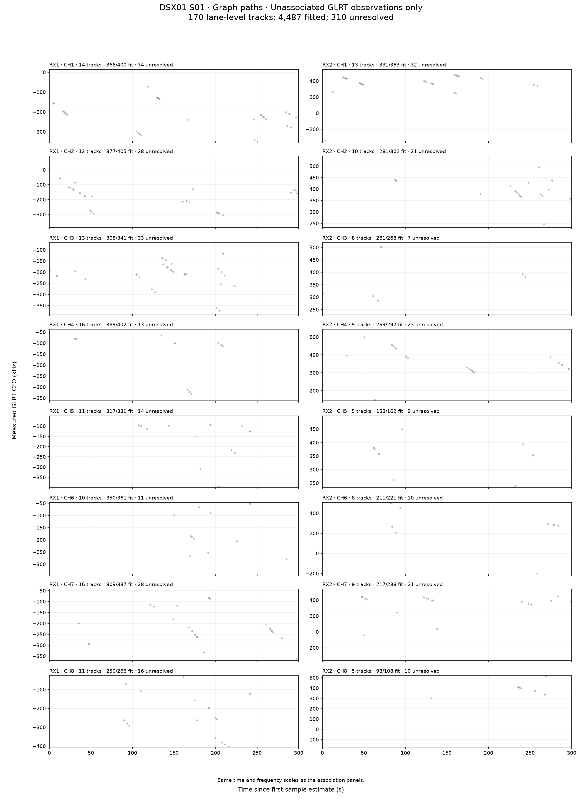
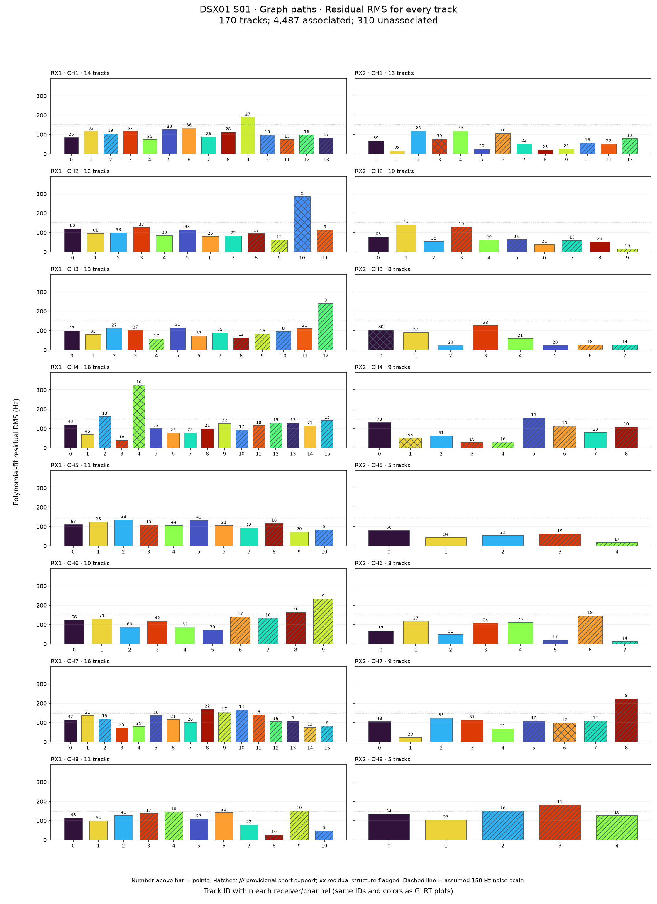
163 tracks · 4,499 associated · 298 unassociated · 93.79% associated · mean 27.60 points / 23.98 s per track · Per-track RMS CSV
160 tracks · 4,513 associated · 284 unassociated · 94.08% associated · mean 28.21 points / 24.22 s per track · Per-track RMS CSV
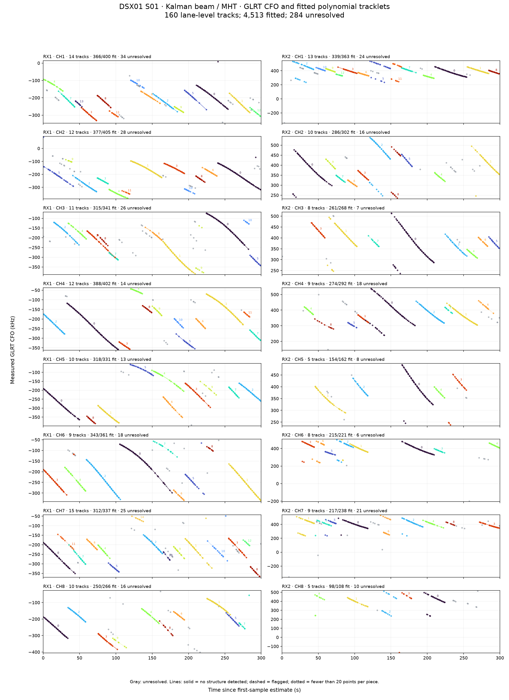
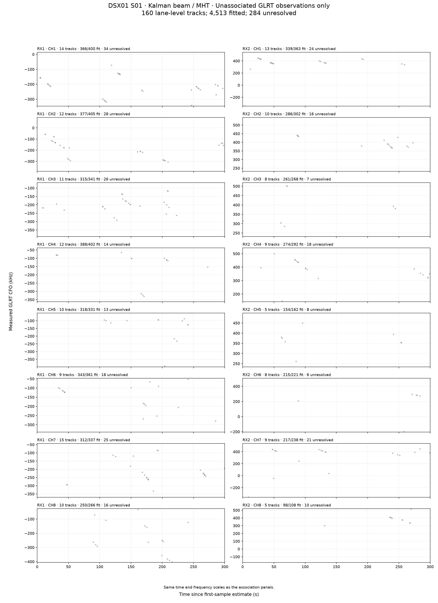
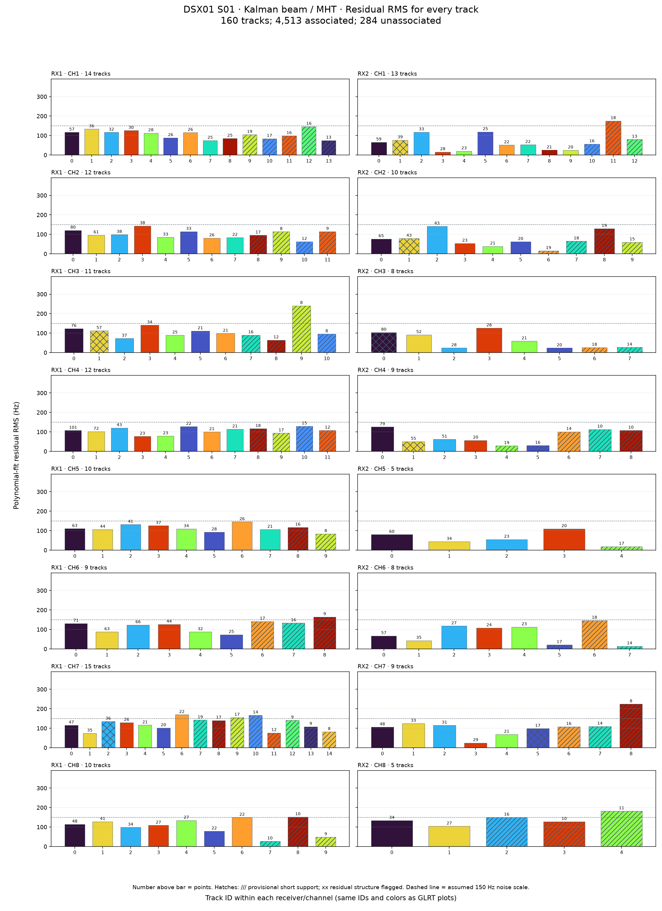
162 tracks · 4,496 associated · 301 unassociated · 93.73% associated · mean 27.75 points / 23.78 s per track · Per-track RMS CSV
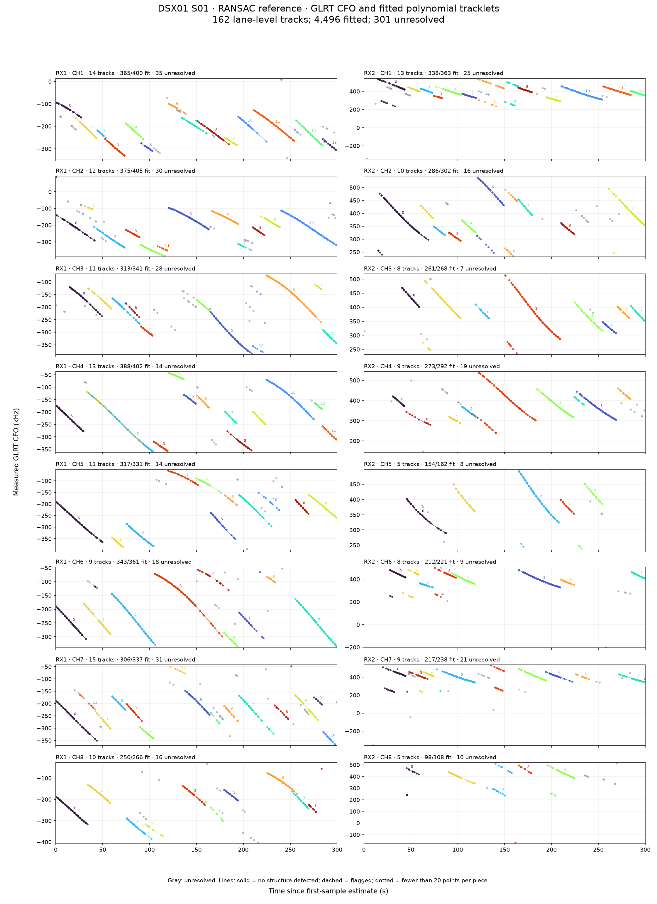
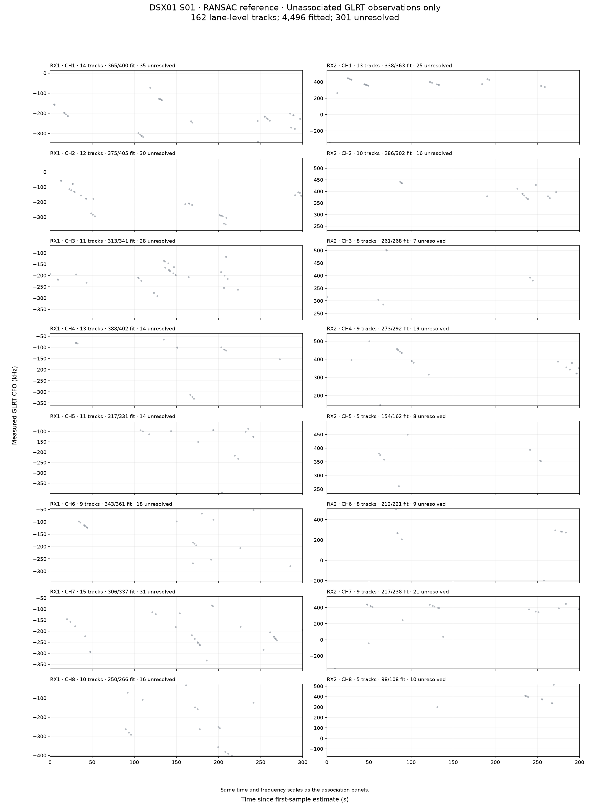
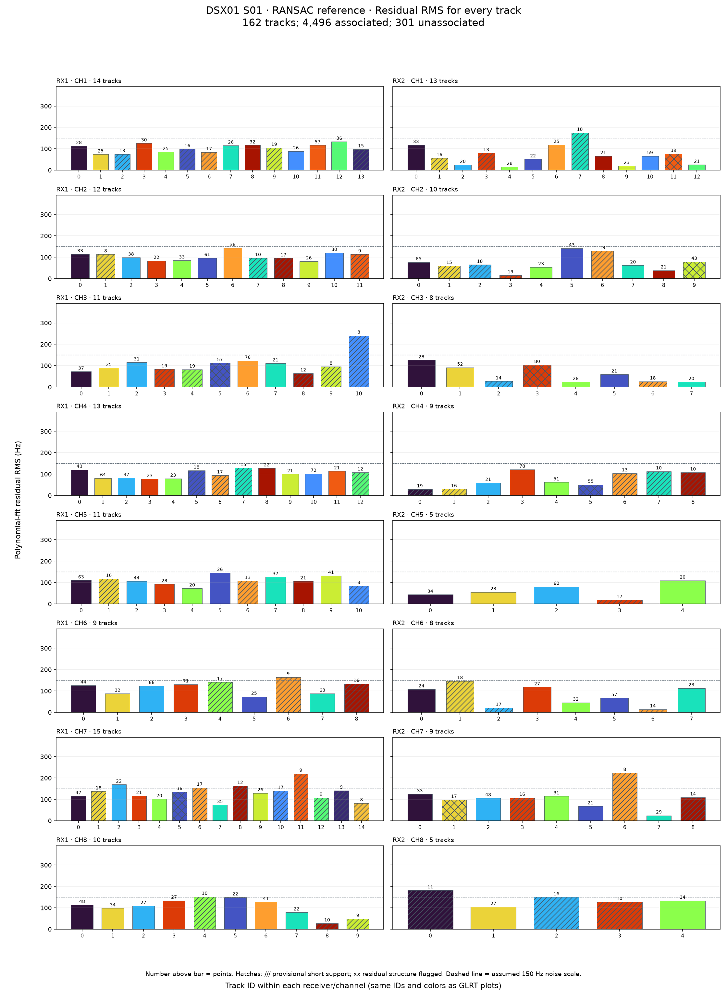